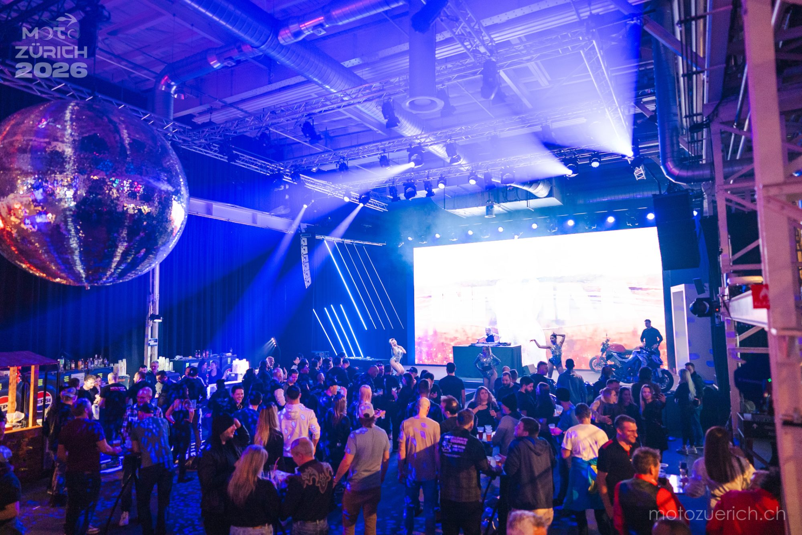

Als die Stände schlossen, kippte die erste MOTO-ZÜRICH in den Clubmodus: Discokugel, LED-Wall, ein Bike auf der Bühne und ein DJ-Set bis tief in die Nacht. Genau dieses Gefühl nehmen wir mit ins nächste Jahr.
Drei Tage Messe, ein gemeinsamer Abend: Am Samstag wurde aus der Eventfläche eine Tanzfläche. Wer dabei war, weiss, warum sich der Saisonstart der Schweizer Motorradszene wie ein Heimspiel angefühlt hat — nahbar, laut und ohne Berührungsängste.
Spiegelkugel über dem Floor, bewegte Beams und eine raumhohe LED-Wall — die Industriehalle wurde zum Club, ganz ohne die Industrie-Ästhetik zu verstecken.
Melodic Techno und Progressive House aus Zürich. Ein fokussiertes Night-Set mit klarer Struktur, fliessenden Übergängen und konstantem Drive an den Decks.
Mittendrin auf der Bühne: eine Maschine im Scheinwerferlicht statt im Showroom. Genau dafür sind wir hier — Motorräder gehören in die erste Reihe.
Bar, Tänzerinnen und eine Szene, die zusammenkommt: Aussteller, Fahrer:innen und Crew feiern den Saisonstart gemeinsam — auf Augenhöhe statt nach Programmplan.